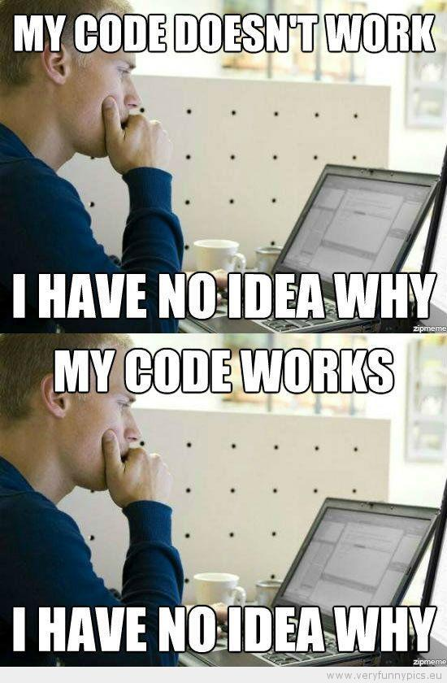

大概說明一下甚麼是單元測試
為甚麼我們需要寫單元測試？
相信有很多人一開始接觸程式的時候都會去驗證自己寫的功能是否能如預期般執行，其實這個行為就是測試你自己的程式，從人工測試去驗證你所撰寫的程式，變成讓程式自己去驗證，不僅可以省去人工作業可能犯下的錯誤、遺漏，更可以節省你自己的時間成本，將時間花在更有意義的事情上面，不管是開發新功能，喝杯咖啡，早點下班陪家人，都比反覆的手動測試你自己的程式要來的好
甚麼是單元測試？
所謂的單元測試其實有幾個特點，像是常常聽到的一次只測一件事情，隔離外部相依性，這些原則都只是為了要確保單元測試是最小的測試單元。為什麼呢？因為只有這樣子才足夠單純，單純到一出問題，就會明白到底是哪裡出錯了，進而快速的找到問題點儘速修復，當明白了單元測試的一些撰寫原則之後，就可以動手開始撰寫測試程式，讓測試程式來驗證你所撰寫的 Production Code 是否如你預期般的運作
有一個笑話應該很多人都聽過：My Code Doesn’t Work and I Don’t Know Why and Now Its Working and I Don’t Know Why

圖片來源：https://teacherlearnstocode.com/2014/11/05/embracing-my-beginners-mindset-avoiding-overthinking/
因為程式是照你寫的跑，不是照你想的跑 – 91
你相信誰寫的程式碼？你應該相信的是測試過的程式碼。 - Ruddy Lee
不寫測試的代碼就是耍流氓 – 對岸某大牛
單元測試還有一個很重要的功能。對 Develop 來說應該是最主要的功能：讓你對於自己所撰寫的程式碼有信心。
如何開始撰寫單元測試？
撰寫單元測試大致上都會遵循著 3A 原則
- Arrange：測試程式內初始化的部分都放在這裡，包含了預期執行的結果，建立待測試目標類別，準備簽章方法的各項輸入參數等等
- Act：實際呼叫被測試方法的部分
- Assert：呼叫方法之後的驗證部分
單元測試必須具備自我驗證的功能，也就是 Assertion 這件事情，透過各式各樣的驗證語句或套件，讓程式能夠顯示測試結果是成功或失敗
驗證分為三個類型
- 驗證回傳值：呼叫待測試類別的某個方法，驗證該方法的回傳結果，最常見的範例就是計算機類別，輸入兩個數字進行運算，驗證回傳的值
- 驗證狀態：當呼叫待測試類別的某個方法後，驗證該類別的某個屬性
- 驗證互動行為：當呼叫待測試類別的某個方法後，該方法內部會與其他物件互動。
例如系統有一個存檔功能，而存檔需要寫系統LOG、也要寫使用者歷程記錄。所以內部實作呼叫了Log 類別，也呼叫了 UserHistroy 類別，而我們需要驗證他與其他物件的互動行為是否如我們預期，撰寫測試時需要注意一個測試程式只測試一件事情。因此這一個例子，請拆成兩個測試案例來做。
習慣上會將待測試目標類別變數設為
target，或者是 sut–—System Under Test，如果團隊有共識，用甚麼變數名稱其實都無所謂。
單元測試具備的特性
- Fast：因為開發過程中你會非常頻繁的執行測試
- Indepentent：隔離外部，所以會有幾個好處：執行速度快、關注點分離、單一職責
- Repeatable：在測試、正式環境底下都是一樣結果；不同日期、隨機函數也不會影響
- Self-checking：記得寫 assert，不需要再去檢查DB、UI看結果
- Timely：盡早交付測試程式
導入 TDD ，在團隊不熟悉的狀況下，最起碼 commit 的時候同時交付測試程式及 Production Code
如果想系統的了解一下相關知識，可以參考一下 91 的 [30天快速上手TDD]目錄與附錄。